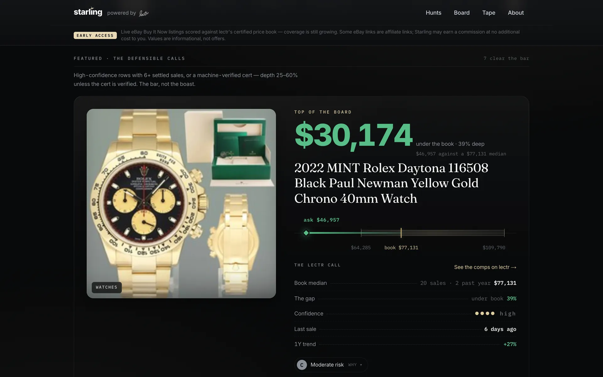
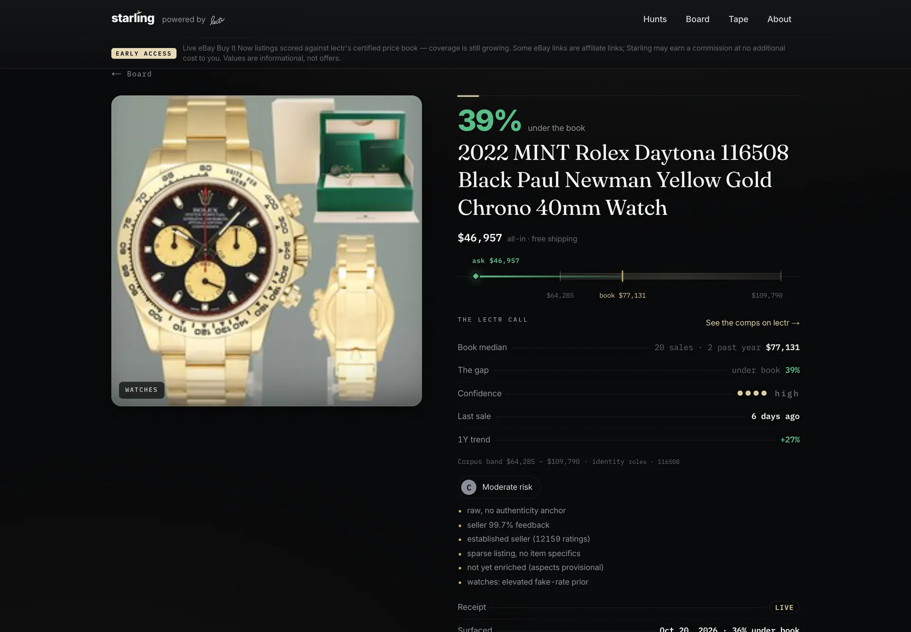
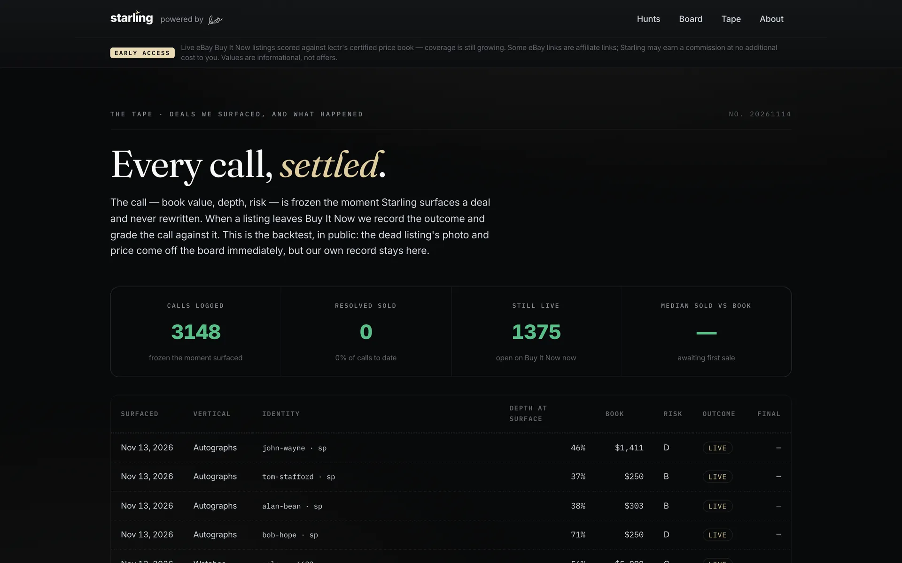

eBay listings priced deep
under what they sell for.
Starling sweeps eBay Buy It Now every three hours and surfaces the listings priced deep under lectr’s settled auction prices, each with its evidence and a risk grade.

A low price means nothing without a known value.
A Buy It Now price is cheap only against what the same item has sold for. lectr holds that record: 1.25M lots from 21 houses. Starling takes lectr’s value book and points it at eBay’s fixed-price listings.
Pin the listing to a known key, or abstain.
Each vertical has its own matcher: sports cards, Pokémon, watches, autographs and art editions. A matcher either pins a listing to one key in the value book or abstains.
- Search sweeps on the eBay Browse API. A scheduler splits the daily call budget across verticals and a quota ledger stops before the limit.poll
- A second lookup on shortlisted candidates pulls the item’s own specifics.enrich
- The vertical’s matcher pins the listing to a book key, or abstains.identify
- Condition flags and a scam cap: anything more than 90% under its value is suppressed.gate
- A risk grade, and a rank from depth, confidence and liquidity.score
- The board is written as one JSON file and committed to the repo.publish
- Every surfaced deal is appended to a ledger and later resolved to its outcome.receipts

Every three hours, on a schedule.
A GitHub Actions cron runs the pipeline, commits the regenerated board, and that commit deploys a static Next.js export to Cloudflare Pages. Only official eBay APIs are used.
The pipeline’s state lives in Cloudflare R2 as write-once versions behind a single pointer, with dated snapshots to roll back to. The whole system also runs offline against recorded eBay responses, so every stage is built and tested without eBay access.
- Schedulecron 15 */3 * * *
- eBay Browse API budget5,000 calls a day
- Fixture modenpm run board:fixture
Every call is kept.
Book value, depth and risk are frozen the moment a deal is surfaced and never rewritten. When a listing leaves Buy It Now, the outcome is recorded against the call.

No exact identity, no deal.
A deal exists only when its listing pins to an exact key in the value book. The value book stays in private storage and the board publishes book numbers only for the deals it shows. The deployed board sits behind a PIN; the source is public.
- StackTypeScript · Next.js static export
- Runs onGitHub Actions · Cloudflare Pages + R2
- Sourcepublic on GitHub